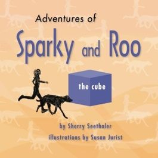

Sparky loves science.
Roo loves her toys.
They both love to run.
When gravity gets things going, together these best friends learn that the first approach to a problem does not always work as planned.
A bit of luck and an open mind can save the day.
Story by Sherry Seethaler, PhD.
Illustrated by Susan Jurist, BFA, MLS.
Adventures of Sparky and Roo: The Cube is an illustrated children's book suitable for storytime with young children or independent reading time for children who are progressing in their reading skills. This fast-paced, light-hearted adventure will hold the attention of the youngest audiences and amuse their parents. It is also a great choice for families with older siblings who are helping their younger siblings read. Even the older siblings are likely to learn something new.
The bouncy plot and playful illustrations surreptitiously introduce basic science concepts that explain everyday phenomena. Exposure to science through art and literature is a great way to spark young people's natural curiosity. What's more, a valuable lesson about friendship and perspective is highlighted through this tale of "tails."
Paperback edition, 1200 words, 32 pages, full color, dimensions 8.5 x 8.5 inches.
Available in print now. Learn more or order your copy.